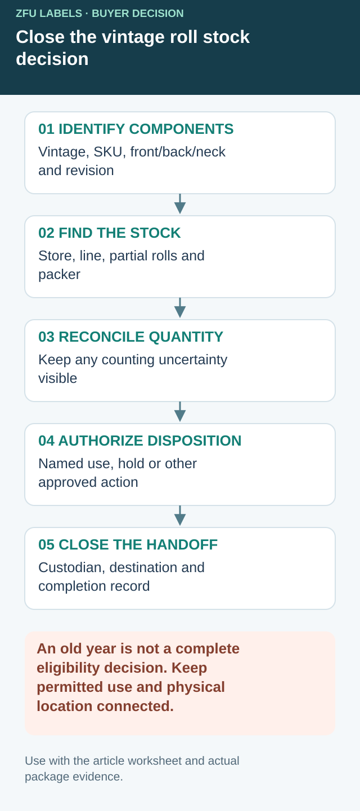

Close the remaining-stock decision after the new vintage starts
Removing yesterday's roll from the applicator is only the first control. Partial rolls can remain in storage, setup labels can sit in the packing area and back-label components can be shared or year-specific. Reconcile each physical component with an authorized disposition so it cannot return as an apparently usable spare.


Use a component-level stock record. The statuses below describe operational questions; they are not regulatory permission to relabel wine or a default scrap instruction.
| Stock field | Record at changeover | Decision owner or closure |
|---|---|---|
| Identity | Vintage, SKU, front/back/neck component and revision | Compare against the accepted production set |
| Location | Store, line, partial-roll area and subcontract packer | Named custodian confirms the search |
| Quantity | Full/partial rolls and the agreed counting basis | Reconcile receipts, use and remaining stock |
| Eligibility | Current approved use, unresolved hold or superseded purpose | Authorized brand/bottler decision |
| Destination | Retain for identified work, segregate or other approved disposition | Location and instruction recorded |
| Closure | Who carried out the instruction and when | Evidence retained without erasing the history |
A hold needs a boundary, not only a colored sticker
For a hypothetical winery bottling two vintages in the same week, one old front-label roll may still serve a specifically scheduled old-vintage run. Another roll may belong to a discontinued market version. Those are different decisions even when both show the same year. State the allowed job and custodian for retained stock; keep uncertain stock away from normal line replenishment until its owner resolves the question.
Do not assume an unchanged back design is either automatically common or automatically obsolete. Compare the controlled content and component references. The responsible reviewer decides what remains applicable; operations records which physical rolls that decision covers. If both are common, preserve that evidence instead of needlessly scrapping useful stock.
Reconcile quantity without inventing certainty
Partial-roll counts may be estimates under the packer's agreed method. Label them accordingly. Investigate a material discrepancy rather than altering the count until it agrees with the purchase order. Separate counting uncertainty from eligibility: knowing exactly how many labels remain does not establish that they may be used.
At the next run's release, check the actual staged front and back components against the authorized set. Retain the residual-stock record alongside that release. The document-conflict guide resolves inconsistent instructions; the repeat-color guide protects the physical appearance target. This record closes the different question of where the older components are and what may happen to them.
Separate artwork approval from roll control
A vintage update may look like one changed numeral in the PDF. In the bottling room it becomes a new roll, a new carton of labels and a chance for an old roll to be loaded by habit. My first question would be who owns line clearance: the brand, the bottler or the label supplier? A proof signed by marketing does not remove obsolete rolls from beside the machine.
Consider a composite winery with a 2024 and a 2025 Pinot Noir bottled on adjacent days. The bottle, front design and back layout look almost identical. The easiest human error is to assume the reel on the bench is current. I would make vintage prominent on the roll carton, reel tag and job traveler, then count remaining 2024 stock before the first 2025 pallet is staged.
Know what may change in an approved label
For U.S. wine, TTB's wine FAQ gives an example in which changing only a vintage date on an otherwise identical non-organic approved label can be an allowable revision; other changes, including appellation or varietal, may require new approval. That is not permission to change every wine label without review. The winery or importer should verify its actual approval and destination market.
I would keep the approved artwork version, vintage source file, final proof and print order together. If an unapproved marketing sentence enters the 2025 file while the team focuses on the year, the issue is larger than roll control.
A practical changeover at the applicator
Before the new run, remove the prior vintage rolls, loose labels, carton sleeves and printed setup sheets from the station. Record the new roll identifier and compare the first labeled bottle against the approved proof. Check the back label as well as the front, especially if it carries a lot code or changed distributor detail. Keep one physical first bottle for the batch record.
The fictional Cedar Vale image shows three years and separate rolls so the problem is easy to see. It is an editorial illustration, not a client record or a legally complete wine label. In a real line, a secondary label or coding unit may be where the mismatch hides.
Order quantity with residual stock in mind
A large order can lower unit label cost, but leftover year-specific rolls become obsolete at the next vintage. I would compare the apparent price saving with storage, changeover risk and scrap. For a smaller winery, a shorter run may be the cheaper decision in total. If the brand sells a non-vintage cuvée alongside vintage wine, do not group those art files simply because the bottle shape matches.
Send the current approved artwork, exact changes, run quantity by vintage, bottling calendar, front/back roll requirements, roll-direction specification and whether variable data is applied on the line. The useful supplier discussion is about how the labels will be identified and consumed, not only how quickly they can be printed.
Our buying view
What we would decide first
Treat each vintage as an inventory and line-clearance decision, not just a changed numeral. A short trial on the actual pack can settle that question before a full printed roll is ordered.
Related buyer guides
Frequently asked questions
Can I change only the wine vintage without a new U.S. approval?
TTB lists some vintage-date changes as allowable revisions for qualifying approved labels; the winery should check its exact label and market.
Why not print a large stock of vintage labels?
Unused year-specific rolls can become obsolete and increase wrong-roll risk. Compare total cost, not only unit price.
Send the unresolved specification question
Include vintage/component list, current artwork references, remaining-roll locations and counts, next run plan and unresolved disposition owner.
Prepare a label specification inquiry. The contact form opens an email draft; review it and use the listed email or WhatsApp route for attachments. Available construction, sample scope, pricing and timing require confirmation for the actual job.